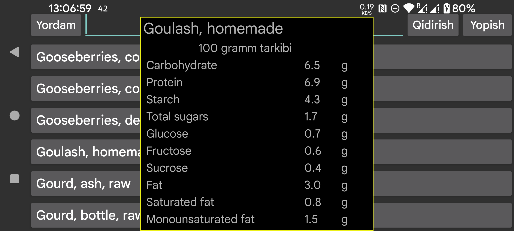

ar be de es fr it nl pl pt ru tr uk uz zh en
Bu yerda McCance and Widdowson’s The Composition of Foods Integrated Dataset 2021 ma’lumotlar bazasidan mahsulotlarni qidirishingiz mumkin:
https://www.gov.uk/government/publications/composition-of-foods-integrated-dataset-cofid
Qidiruvda regular expressions (muntazam ifodalar) dan foydalanish mumkin:
https://www.regular-expressions.info/quickstart.html
Masalan, apple bilan boshlanib, keyin raw so‘zi keladigan elementlarni qidirish uchun ^apple.*\braw\b yozish mumkin.
apple ni oddiy qidirish esa tarkibida “apple” bo‘lgan barcha elementlarni ko‘rsatadi.